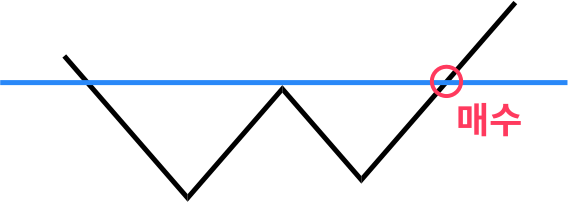

https://blog.naver.com/anthouse28/223190422326
두개의 저점 중 최근 저점이 높아야 한다. 전 고점 돌파 시 양봉인 경우 손절 라인 https://blog.naver.com/intpjune/223162428451
https://blog.naver.com/technicalanalysis/223119224163
조건식 https://blog.naver.com/kdfkgkhkjk12/223008345779
